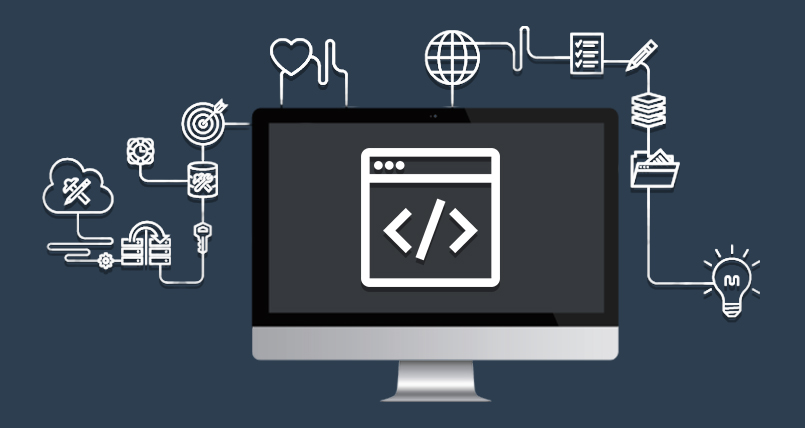

Back-end development focuses on the server-side of web applications. It is responsible for handling application logic, managing databases, and sending data to the front end through APIs. Back-end code runs on servers and communicates with clients using HTTP.
Web servers receive user requests and return responses over HTTP. They handle routing, request processing, and content delivery.
Back-end developers use server-side languages and frameworks to build APIs and business logic. Common examples include Java with Spring, Python with Django, and JavaScript with Node.js.
Git allows developers to track changes, collaborate with others, and manage different versions of a project safely.
Security practices protect applications from threats such as data leaks and malicious attacks. This includes using HTTPS, validating user input, and preventing common vulnerabilities.
APIs allow the front end and back end to exchange data. REST APIs using JSON are commonly used to support communication between systems.
After testing, applications are deployed to live environments. Cloud platforms provide scalable resources such as servers, databases, and storage.